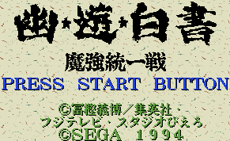
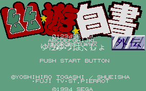

Yuu Yuu Hakusho - Genesis Games

Controls
- A button: Strong and Slow Attack
- B button: Fast and Weak Attack
- C button: Blocking Attacks
- X button: Dash Forward (also done by tapping towards twice)
- Y button: Switch Backdrops (also done by pressing Up + C)
- Z button: Dash Backwards (also done by pressing B + C)
- Start: Pause
You can choose from 11 characters from the series. This game is unique in several ways. It
was one of the few games to utilize the 6 button Genesis controller; also, it had the typical story
mode, a practice mode, a tag team mode, a VS mode, and a 2 on 2 mode. The 2 on 2 mode
allows up to four players duke it on the screen at one time.

No information available at this time.
Anime Video Game Resource Center © 1998 by Luis A. Cruz